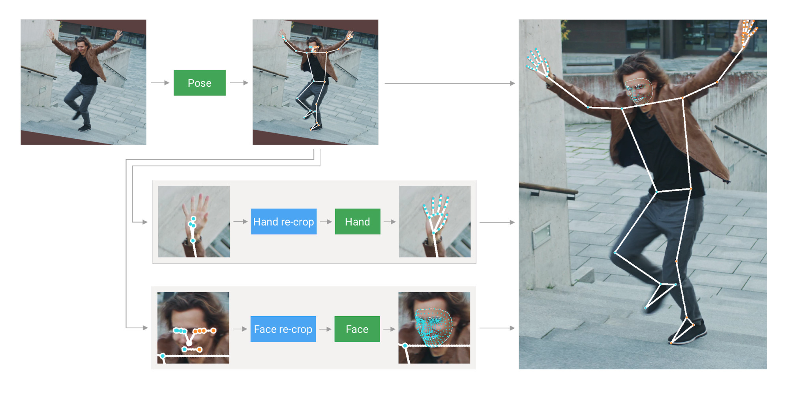

Sign language recognition from sequences of monocular images or 2D poses is a challenging task. They propose a novel Contrastive Transformer-based model, which demonstrates to learn rich representations from body key points sequences. This allows us to apply these techniques to perform one-shot or few-shot tasks, such as classification and translation. The experiments showed that the model could generalize well and achieved competitive results for sign classes never seen in the training process. By 2050 more than 700 million people will have disabling hearing loss.
 Sign Language Recognition (SLR) can be divided into two main areas: single sign recognition and continuous sign recognition. This paper presents a novel way of performing classification tasks by using a Transformer encoder trained in a contrastive learning approach that need few examples. The next sections are divided as follows: Section 2 presents the relevant works in the literature; Section 3 gives an overview of the theoretical background related to this paper. Section 5 presents the conclusions of the experiments and future works.
Transformers recognize and locate human actions from a video by using a sequence of RGB frames as input. SLR uses Transformer connected to a Connectionist Temporal Classification(CTC) to perform a continuous SLR. This approach is very expensive in terms of data acquisition and not scalable: a new class can only be incorporated by adding labeled examples of it and retraining of network. This problem is particularly critical in task such SLR, since it is common to deal with a tens of thousands of distinct signs.
A Transformer-Based Contrastive Learning Approach for Few-Shot Sign Language Recognitio is used. The skeleton is built from the pose, containing 33 key-points, and hands, each containing 21 key-point. The face model was not used in this work. The experiments conducted to evaluate this process are detailed in Section 5.2.2. The Transformer model with its inputs and outputs is shown in Figure 3.1.1. For a sequence of images V, the sequence of coordinates X will serve as input to a multi-layer Transformer encoder.
The model receives a sequence of skeleton key-points, creates a vector representation and append information about the sequentiality, and then, the Transformer maps this sequence to an embedding vector. To accomplish this, a positional encoding vector is added to each input element. This vector is calculated by periodic functions, such as sine and cosine, and it determines the relative distance between input elements by using differentrequencies depending on the input element position in the sequence. The encoder is a stack of n = 2 layers, where each one contains two sub-layers.
A Transformer-Based Contrastive Learning Approach for Few-Shot Sign Language Recognitio has been described in this article. They use k-Nearest Neighbors, feed-forward networks and Feed-Forward Networks. The results will be describe in next sections. The Multi-Head Attention(MHA) is concatenated and projected to get the MHA results, as described in Equation 6.2.3.4.5.6.7.9.7: The results are described in next section.
A Transformer-Based Contrastive Learning Approach for Few-Shot Sign Language Recognitio is called kNN. The cosine similarity measures how similar are two vectors from a given inner product space. The inner product can be geometrically interpreted as how aligned the vectors are, as shown in Figure 5. In kNN algorithm for classification, the variable k represents the number of nearest neighbors used to predict the label of the input based on the k nearest points.
A Transformer-Based Contrastive Learning Approach for Few-Shot Sign Language Recognitio. (Source: [41)) They evaluate the method on LSA64 Dataset, which is a Argentinian Sign Language dataset. It includes 3200 videos where 10 non-experts subjects perform 5 repetitions of 64 different classes of signs, making 50 videos per sign. The training process aims to minimize the negative log-probability J (θ) = −logpθ(y = k|x) of the true class k.
In the training process, the objective is to increase the distance between the anchor and the negative point. The loss function L(xa, xp, xn) will have as inputs embedding vectors representing the anchor point xa, the positive point xn and negative point, Xn. The process of constructing a triplet consists of randomly choosing two different classes. Each point is an encoding from the Transformer model. The process will be repeated to construct the training set. The loss is calculated to minimize the Euclidean distance between xa and xp.
A Transformer-Based Contrastive Learning Approach for Few-Shot Sign Language Recognitio is based on the Transformer encoder. The methods used in this work are Prototypical Networks, k-Nearest Neighbors and Cosine Similarity. The few-shot classification can be performed using different methods that relies on the fact that each input sample can be mapped to a embedding vector, and then, the predicted class will be determined by a given strategy. The output of the training phase described in Section 4, the embedding space, can virtually represent any sign that shares some resemblance with the content trained.
The number of clusters has influence in the performance accuracy, in other words, the worst scenario is when the number of way is at its maximum. The experiments with interpolation procedure outperformed its counterparts in almost every scenario, and because of that, the interpolation as a pre-processing step was adopted in the subsequent experiments. It can also be noted that the experiments with. interpolation. outperformed their counterparts in. almost every. every scenario in the experiments
A Transformer-Based Contrastive Learning Approach for Few-Shot Sign Language Recognitio-Interpolation? The algorithm is k-Nearest Neighbors algorithm in the classification task. It is necessary to determine a value for k which is the number of nearest neighbors used to make the prediction. The number of signs used for training is also evaluated from 10 to 45 in increments of 5. The accuracy of each combination of k = n with the. number of training classes was evaluated 40 times. Increasing k also have a positive effect on the accuracy of the accuracy.
For classification using cosine similarity, only the most similar sample from the test set is used to make the class prediction. The accuracy of each experiment was evaluated 40 times. The maximum accuracy occurs when the number of training signs is at maximum, 45, and the. number of test samples for each class, n, varies from 1 to 8 with classes never seen in training. Those signals have similar gestures, as shown in Figure 10.5.1.2.
Confusion matrix for kNN used in classification task with k = 8 with model trained with 45 signs. Comparison between the signs of "dance" and "bathe" in some samples. In some samples the model mislabeled these signs because of their gesture similarity. Figure 9 shows that some signs are similar to those of dance and bathe. Figure 10 shows that the same sign was used in the same task. The model was trained with kNN with k= 8.
A Transformer-Based Contrastive Learning Approach for Few-Shot Sign Language Recognitio# train signs with a few-shot sign language recognition. Confusion matrix for cosine similarity used in classification task with n = 8 with model trained with 45-signs. Results were based on the number of signs used for training the Transformerencoder and number of samples from each test class, n, from 1 to 8. Conflation matrix.
The visualizations of the embedding vector space were produced by t-SNE, which can be considered a. manmanifold approach to dimensionality reduction. This allows the model to be particularly sensitive to local structure, that structure can be seen at many scales on a single map. The same experiment were conducted for 16 signs classes, with 50 samples per class, from the test set that were never seen in the training, as shown in Figure 13. The majority of classification results for kNN and cosine similarity and prototypical.networks achieved accuracy close to 90%. The positive correlation of the accuracy with the number of training.s suggests that a large